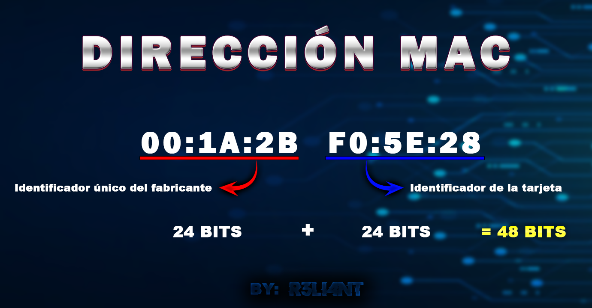

# ¿Qué es una dirección 'MAC'?
Una dirección MAC (Media Access Control) es un identificador único que se le asigna a la tarjeta de red del dispositivo que ha sido fabricado, desde routers hasta impresoras y otros dispositivos. Las direcciones MAC están compuestas por 48 bits que son representados en dígitos hexadecimales, cada hexadecimal equivale a 4 binarios (48:4 = 12). Por lo tanto, es formada por 12 dígitos agrupados en seis parejas separadas por dos puntos (:); por ejemplo: 0a:2b:c4:ee:a2:bc. Los primeros 24 bits (6 dígitos) son configurados por el fabricante de la tarjeta y los últimos 24 bits que restan identifican la tarjeta de ese fabricante.

Al ser identificadores únicos, un administrador de red puede crear listas para denegar o permitir el acceso a uno o varios clientes en la red.
Lista BLANCA: Identificadores que tienen permitido acceder a la red.
Lista NEGRA: Identificadores que tienen prohibido acceder a la red.
El filtrado por MAC es útil para expulsar intrusos de la red pero es fácil burlarse de su seguridad con un cambio de MAC. Primeramente, el atacante pone su tarjeta en modo monitor y luego captura los paquetes de la red objetivo (sin estar conectado a dicha red) con airodump, lo que le permitirá ver los clientes (STATIONS) conectados a la red y suplantar su dirección MAC aceptada.
# CAMBIAR DIRECCIÓN MAC | TMAC
Technitium MAC Address Changer es un software gratuito que permite cambiar la dirección MAC única de los adaptadores de red Wi-Fi y LAN. Esta diseñado para Windows, la herramienta cuenta con varas características de uso práctico para usuarios inexpertos, ofrece una interfaz simple e intuitiva.
Descargar: https://technitium.com/tmac/
Completan todos los pasos de instalación.

Luego de la instalación, deben posicionarse en el adaptador de red que deseen cambiar su MAC:

Así como MacChanger para Linux, TMAC también trae incorporado una lista de direcciones junto con su fabricador para suplantar:

Una vez elegido el fabricante, clic en "Change Now:"

Si realizamos un escaneo desde ArpScan podemos observar como reconoce la MAC suplantada en la interfaz de red de Windows:

Lo mismo si mapeamos nuestra red local con Nmap:

Ahora probaré cambiar la dirección MAC del adaptador de VMware por una Samsung:

Ahora supongamos que el atacante utiliza una herramienta de reconocimiento de direcciones como lo es Netdiscover o ArpScan:


Luego intentará obtener más información de dicha MAC, así que recurre a fuentes públicas para obtener más información (Ej. macaddress.io):

Recuerden que pueden volver a su dirección MAC original del adaptador con clic en "Restore Original."

# CAMBIAR DIRECCIÓN MAC | NMAC
NoVirusThanks MAC Address Changer es un software gratuito que permite suplantar la dirección MAC de sus adaptadores de red, así como restaurar la dirección MAC original.
Descargar: https://novirusthanks-mac-address-changer.software.informer.com/1.0/
Eligen la interfaz de red y clic en "Change MAC":

Al hacer un reconocimiento de direcciones dentro de nuestra red local, observamos como nuestra MAC fue suplantada con éxito:

Para cambiar a otra dirección MAC deben de hacer clic en "Randomize" y para restaurar la dirección de fabrica en "Restore MAC".
# CAMBIAR DIRECCIÓN MAC | SMAC
SMAC es un cambiador de direcciones MAC (Spoofer) potente pero fácil de usar para sistemas Windows 10, 8, 7, VISTA, 2008, 2003, XP y 2000, independientemente de si los fabricantes de tarjetas de red permiten esta opción o no.
Descagar: https://smac-tool.com/
Contiene una lista de fabricante a seleccionar, así como también una opción de random para elegir una dirección aleatorio, eliminar MAC y restablecer de fabrica. En "Update MAC" establecemos la dirección a suplantar una vez seleccionada:


# CAMBIAR DIRECCIÓN MAC | Smart MAC
Smart Changer es un software que no solo permite suplantar una dirección MAC, sino también cambiar la configuración de los DNS para acceder a sitios web bloqueados por el ISP, así como también un proxy gratuito.
Descargar: https://download.cnet.com/Smart-DNS-Changer/3000-2381_4-76158452.html
Primeramente seleccionan el adaptador de red:

En el apartado de MAC Changer le dan clic en "Generate random MAC Address y luego en "Apply MAC Address":


# CAMBIAR DIRECCIÓN MAC | Manual
Otra forma de cambiar la dirección MAC en Windows es accediendo a Administrador de dispositivos en inicio de Windows -> Adaptadores de red -> Eligen la interfaz de red y luego clic en "Propiedades":

Opciones avanzadas -> Network Address -> Activan valores e ingresan la dirección falsa: